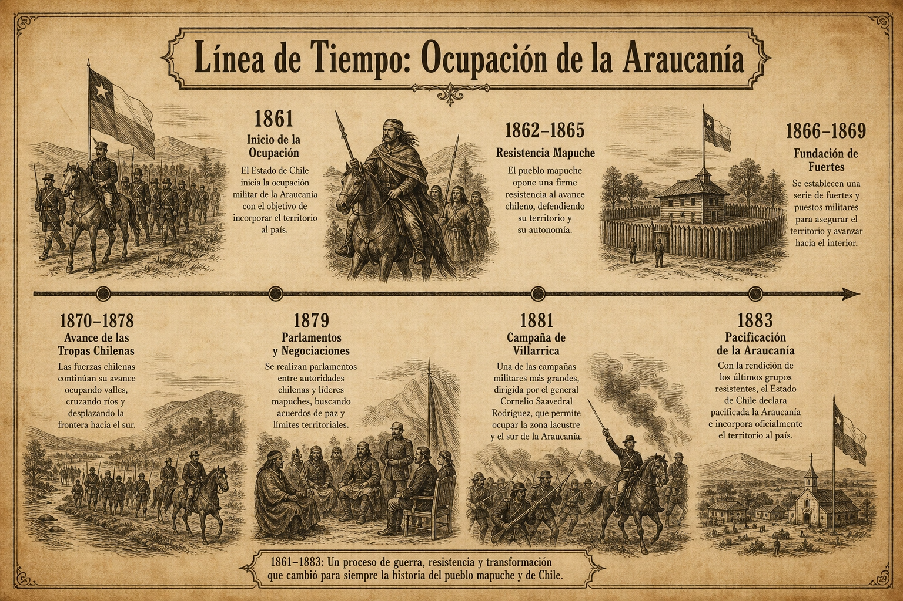
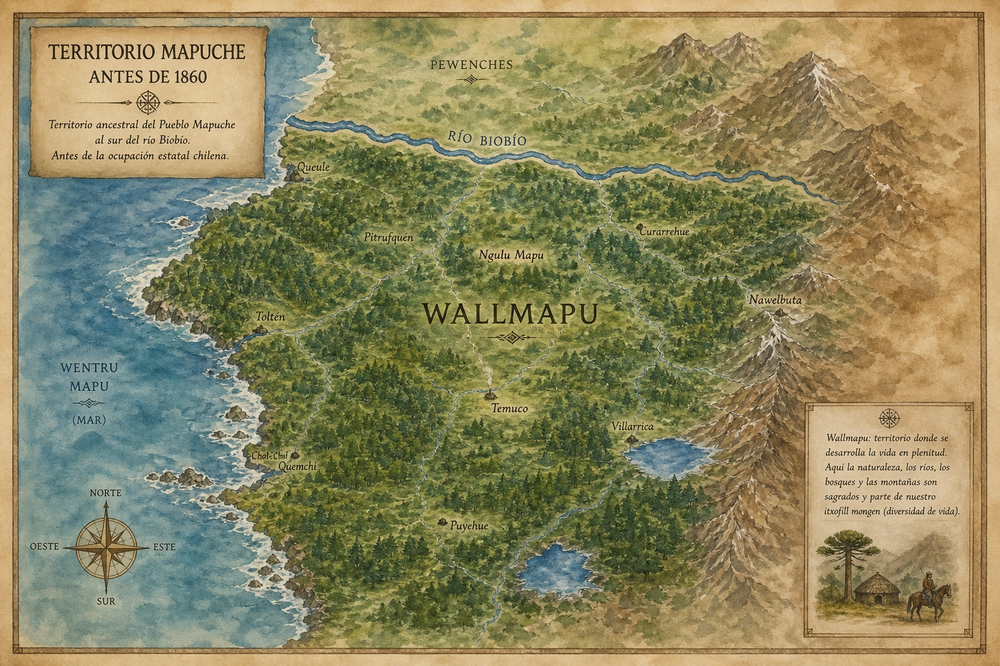
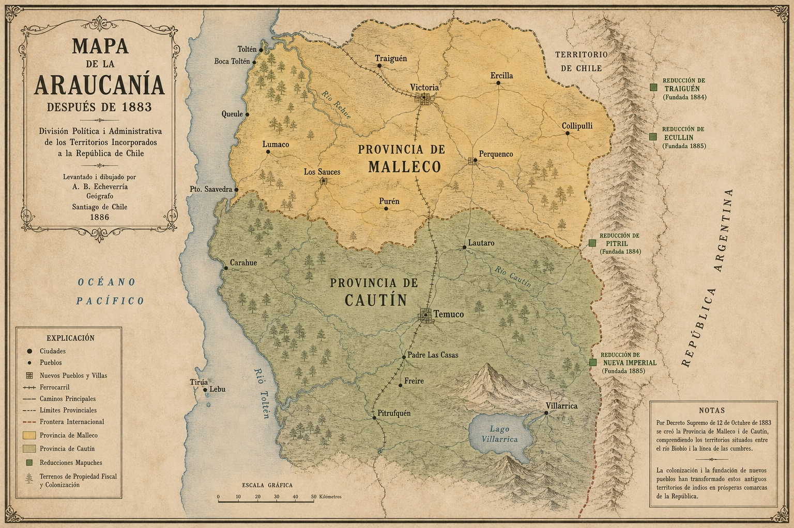
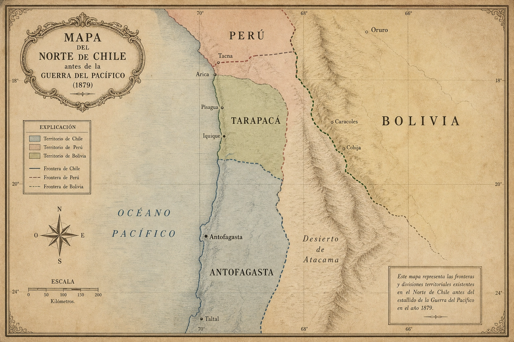
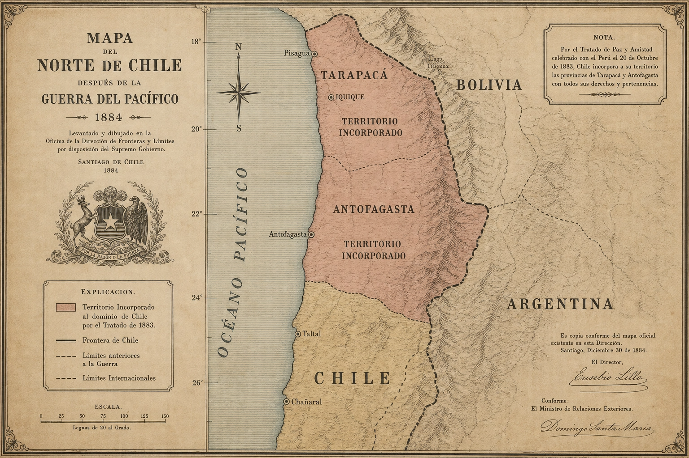

Introducción
El presente trabajo analiza y compara los dos principales procesos de expansión territorial desarrollados por el Estado chileno durante la segunda mitad del siglo XIX. A través de un enfoque histórico y geográfico, se examina la incorporación de la Araucanía en el sur y la anexión de las provincias del Norte Grande tras la Guerra del Pacífico. El estudio de estos hitos permite comprender cómo la búsqueda de recursos económicos y la consolidación de la soberanía nacional sentaron las bases del territorio chileno contemporáneo.
Nota sobre las fuentes: En este trabajo se utilizan citas académicas para respaldar la información. La abreviatura s. f. significa "sin fecha". Cuando una institución tiene varias fuentes sin fecha, se diferencian con letras (s. f.-a, s. f.-b, etc.), las cuales pueden consultarse en la sección de bibliografía final.
La Ocupación de la Araucanía terminó con la anexión y colonización territorial, además de la radicación y reducción de comunidades mapuche (Memoria Chilena, s. f.-a). Por otro lado, la Guerra del Pacífico se vincula con los conflictos entre Chile y Bolivia por la definición de fronteras en una zona rica en recursos minerales (Memoria Chilena, s. f.-b).
La Ocupación de la Araucanía (1861-1883)
Este proceso consistió en la incorporación militar y administrativa del territorio ubicado al sur del río Biobío. No fue solamente una expansión territorial, sino una transformación profunda que redujo el territorio indígena y fortaleció la presencia del Estado (Memoria Chilena, s. f.-a).

Causas
El Estado buscaba unificar el territorio nacional y ocupar tierras agrícolas para el auge del trigo. Esta expansión respondió a intereses políticos y económicos estratégicos (Memoria Chilena, s. f.-c).
Desarrollo
El avance se realizó mediante campañas militares, construcción de fuertes y fundación de ciudades en etapas marcadas por la acción del ejército (Memoria Chilena, s. f.-c).
Consecuencias
El pueblo mapuche perdió gran parte de sus tierras y autonomía, siendo reducido a espacios pequeños. Este proceso generó tensiones territoriales vigentes hasta hoy (Memoria Chilena, s. f.-a).
Comparativa Territorial: Sur de Chile


La Guerra del Pacífico (1879-1884)
Conflicto armado motivado por el control de territorios ricos en salitre y guano (Memoria Chilena, s. f.-b). Tras la guerra, el Estado chileno anexó Tarapacá y Antofagasta (Memoria Chilena, s. f.-d).
Causas
Disputas territoriales, intereses económicos por el salitre y tensiones diplomáticas por el impuesto de los 10 centavos (Memoria Chilena, s. f.-b).
Desarrollo
Chile logró importantes victorias militares en campañas marítimas y terrestres en Antofagasta, Tarapacá, Tacna, Arica y Lima, lo que permitió el avance chileno sobre territorios del norte (Memoria Chilena, s. f.-e).
Consecuencias
Anexión de Tarapacá y Antofagasta. Arica se incorporó definitivamente en 1929, dejando tensiones diplomáticas persistentes (Memoria Chilena, s. f.-e).
Comparativa Territorial: Norte de Chile


Impacto del Salitre
La industria salitrera fue la principal actividad económica entre 1880 y 1930, transformando la vida social y laboral en la pampa (Memoria Chilena, s. f.-d).
Datos Duros y Estadísticas
Hectáreas Mapuches
De un dominio original estimado en 10 millones de hectáreas, el pueblo mapuche fue radicado en aproximadamente 500 mil hectáreas mediante los Títulos de Merced (ODEPA, 2011).
Territorio en el Norte
Chile incorporó aproximadamente 185.084 km² de territorio tras el conflicto, consolidando su soberanía en el Norte Grande (Biblioteca del Congreso Nacional, s. f.).
Producción Salitrera
En 1890, la producción superó el millón de toneladas métricas. En 1913, alcanzó su récord histórico cercano a los 3 millones de toneladas (Memoria Chilena, s. f.-f).
Ingresos Fiscales
Hacia 1890, los impuestos al salitre representaban casi el 50% de las rentas ordinarias del Estado chileno (Biblioteca del Ministerio de Hacienda, s. f.).
Población en la Pampa
Hacia 1920, la población en las provincias de Tarapacá y Antofagasta superaba los 210.000 habitantes debido a la migración masiva (INE, Censo de 1920).
Tabla Comparativa
| Aspecto | Ocupación de la Araucanía | Guerra del Pacífico |
|---|---|---|
| Fecha | 1861 - 1883 (Memoria Chilena, s. f.-a) | 1879 - 1884 (Memoria Chilena, s. f.-b) |
| Ubicación | Zona Sur (Araucanía) (Memoria Chilena, s. f.-a) | Norte Grande (Antofagasta/Tarapacá) (Memoria Chilena, s. f.-d) |
| Recurso Clave | Tierras Agrícolas (Trigo) (Memoria Chilena, s. f.-c) | Salitre y Guano (Memoria Chilena, s. f.-d) |
| Oponente | Pueblo Mapuche (Memoria Chilena, s. f.-a) | Alianza Perú y Bolivia (Memoria Chilena, s. f.-b) |
| Consecuencia Social | Reducción indígena y pérdida de autonomía (Memoria Chilena, s. f.-a) | Migración laboral y "Cuestión Social" (Memoria Chilena, s. f.-d) |
Impacto Actual: ¿Por qué importa hoy?
Los procesos del siglo XIX no son solo fechas en un libro; sus efectos moldean el Chile de hoy. El conflicto territorial en la Araucanía sigue siendo uno de los desafíos políticos y sociales más importantes del Estado chileno contemporáneo (Marimán Quemenado, 2007). Por otro lado, la pérdida de litoral de Bolivia tras la guerra sigue marcando la agenda diplomática regional y las relaciones internacionales de Chile (Memoria Chilena, s. f.-e). Además, la riqueza generada por el salitre permitió financiar la infraestructura pública que usamos actualmente (Biblioteca del Ministerio de Hacienda, s. f.).
Conclusión
La expansión territorial chilena durante el siglo XIX fue fundamental para la formación del territorio actual del país. Tanto la Ocupación de la Araucanía como la Guerra del Pacífico permitieron al Estado chileno aumentar su control territorial y acceder a nuevos recursos económicos.
Como grupo, concluimos que la expansión territorial de Chile no solo significó crecimiento del país, sino también consecuencias sociales profundas para distintos pueblos y territorios. La historia nos enseña que el progreso del Estado a menudo trajo consigo conflictos y desigualdades que aún requieren análisis y diálogo.
Fuentes Consultadas (Formato APA 7)
- Biblioteca del Congreso Nacional de Chile. (s. f.). Reseña histórica de la formación territorial de Chile. Recuperado de https://www.bcn.cl (Consulta: Junio 2026).
- Biblioteca del Ministerio de Hacienda de Chile. (s. f.). Capítulo II: 1880-1925. El Ministerio de Hacienda durante el período parlamentario. Recuperado de https://biblio.hacienda.cl/ (Consulta: Junio 2026).
- Instituto Nacional de Estadísticas. (1920). Censo de Población de la República de Chile (15 de diciembre de 1920). Recuperado de https://www.ine.gob.cl (Consulta: Junio 2026).
- Marimán Quemenado, P. (2007). La corporación araucana (1946-1950): En el quehacer del Diputado Venancio Coñuepán [Tesis de Licenciatura, Universidad de Chile]. Repositorio Académico de la Universidad de Chile. https://repositorio.uchile.cl/ (Consulta: Junio 2026).
- Memoria Chilena. (s. f.-a). Ocupación militar y colonización de la Araucanía (1851-1883). Biblioteca Nacional de Chile. Recuperado de https://www.memoriachilena.gob.cl/ (Consulta: Junio 2026).
- Memoria Chilena. (s. f.-b). Orígenes de la Guerra del Pacífico. Biblioteca Nacional de Chile. Recuperado de https://www.memoriachilena.gob.cl/ (Consulta: Junio 2026).
- Memoria Chilena. (s. f.-c). Campañas de la ocupación militar de la Araucanía. Biblioteca Nacional de Chile. Recuperado de https://www.memoriachilena.gob.cl/ (Consulta: Junio 2026).
- Memoria Chilena. (s. f.-d). La industria del salitre en Chile (1880-1930). Biblioteca Nacional de Chile. Recuperado de https://www.memoriachilena.gob.cl/ (Consulta: Junio 2026).
- Memoria Chilena. (s. f.-e). El impacto de la Guerra del Pacífico (1879-1929). Biblioteca Nacional de Chile. Recuperado de https://www.memoriachilena.gob.cl/ (Consulta: Junio 2026).
- Memoria Chilena. (s. f.-f). Explotación del salitre. Biblioteca Nacional de Chile. Recuperado de https://www.memoriachilena.gob.cl/ (Consulta: Junio 2026).
- Oficina de Estudios y Políticas Agrarias (ODEPA). (2011). Agricultura Indígena Chilena. Información social y productiva de la agricultura según etnia. Ministerio de Agricultura. Recuperado de https://www.odepa.gob.cl (Consulta: Junio 2026).
- Universidad de Chile. (2020). Guerra del Pacífico, panorama historiográfico (1879-2020). Breve comentario. Repositorio Académico Institucional. https://repositorio.uchile.cl (Consulta: Junio 2026).